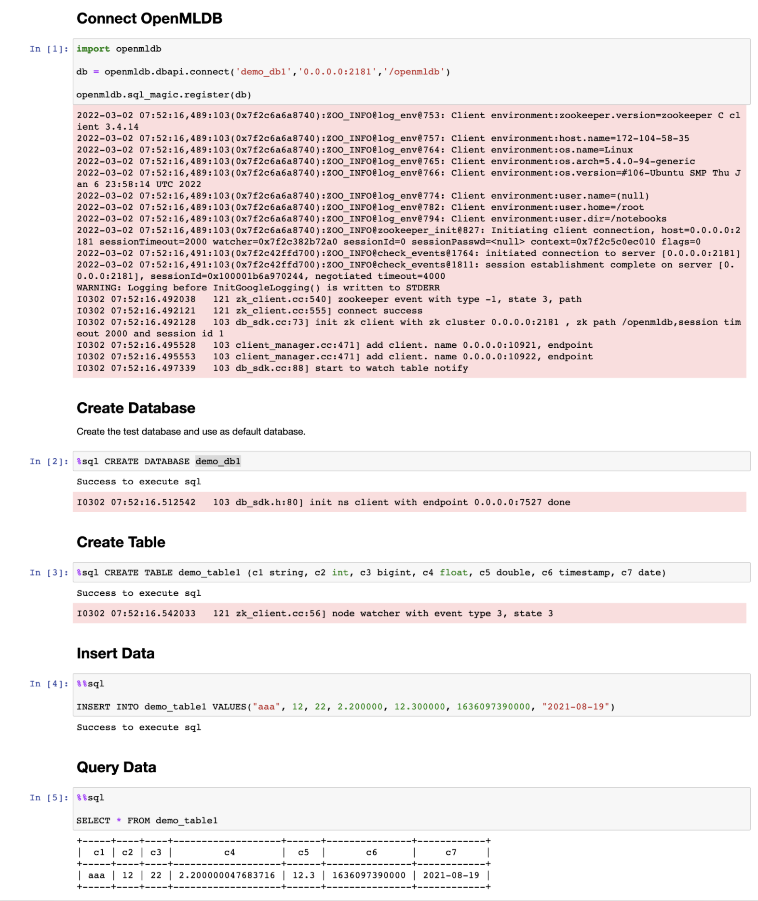

Python SDK Quickstart
Contents
Python SDK Quickstart#
1. Install the Python SDK Package#
Install using pip.
pip install openmldb
2. OpenMLDB DBAPI#
2.1 Create Connection#
When creating the connection, the database name is not required to exist. If it does not exist, you need to create the database after the connection is created.
import openmldb.dbapi
db = openmldb.dbapi.connect("db1", "$zkcluster", "$zkpath")
cursor = db.cursor()
2.2 Create Database#
cursor.execute("CREATE DATABASE db1")
2.3 Create Table#
cursor.execute("CREATE TABLE t1 (col1 bigint, col2 date, col3 string, col4 string, col5 int, index(key=col3, ts=col1))")
2.4 Insert Data to Table#
cursor.execute("INSERT INTO t1 VALUES(1000, '2020-12-25', 'guangdon', 'shenzhen', 1)")
2.5 Execute SQL Query#
result = cursor.execute("SELECT * FROM t1")
print(result.fetchone())
print(result.fetchmany(10))
print(result.fetchall())
2.6 Delete Table#
cursor.execute("DROP TABLE t1")
2.7 Delete Database#
cursor.execute("DROP DATABASE db1")
2.8 Close the Connection#
cursor.close()
3. OpenMLDB SQLAlchemy#
3.1 Create Connection#
create_engine('openmldb:///db_name?zk=zkcluster&zkPath=zkpath')
When creating the connection, the database is not required to exist. If it does not exist, you need to create the database after the connection is created.
import sqlalchemy as db
engine = db.create_engine('openmldb:///db1?zk=127.0.0.1:2181&zkPath=/openmldb')
connection = engine.connect()
3.2 Create Database#
Create a database using the connection.execute():
try:
connection.execute("CREATE DATABASE db1");
except Exception as e:
print(e)
3.3 Create Table#
Create a table using the connection.execute():
try:
connection.execute("CREATE TABLE t1 ( col1 bigint, col2 date, col3 string, col4 string, col5 int, index(key=col3, ts=col1))")
except Exception as e:
print(e)
3.4 Insert Data into the Table#
Using the connection.execute(ddl) to execute the SQL insert statement to insert data to the table:
try:
connection.execute("INSERT INTO t1 VALUES(1000, '2020-12-25', 'guangdon', 'shenzhen', 1);")
except Exception as e:
print(e)
Using the connection.execute(ddl, data) to execute the insert statement of SQL with the placeholder, and the inserted data can be dynamically specified:
try:
insert = "INSERT INTO t1 VALUES(1002, '2020-12-27', ?, ?, 3);"
connection.execute(insert, ({"col3":"fujian", "col4":"fuzhou"}))
except Exception as e:
print(e)
3.5 Execute SQL Batch Query#
Using the connection.execute(sql) to execute SQL batch query statements:
try:
rs = connection.execute("SELECT * FROM t1");
for row in rs:
print(row)
rs = connection.execute("SELECT * FROM t1 WHERE col3 = ?;", ('hefei'))
except Exception as e:
print(e)
3.6 Execute SQL Queries in the Request Mode#
Using the connection.execute(sql, request) to execute SQLs in the request mode. You can put the input request row in the second parameter.
try:
rs = connection.execute("SELECT * FROM t1", ({"col1":9999, "col2":'2020-12-27', "col3":'zhejiang', "col4":'hangzhou', " col5":100}));
except Exception as e:
print(e)
3.7 Delete Table#
Using the connection.execute(ddl) interface to delete a table:
try:
connection.execute("DROP TABLE t1")
except Exception as e:
print(e)
3.8 Delete Database#
Using the connection.execute(ddl) interface to delete a database:
try:
connection.execute("DROP DATABASE db1")
except Exception as e:
print(e)
4. Notebook Magic Function#
OpenMLDB Python SDK supports Notebook magic function extension, you can use the following statement to register the function.
import openmldb
db = openmldb.dbapi.connect('demo_db','0.0.0.0:2181','/openmldb')
openmldb.sql_magic.register(db)
The line magic function %sql and block magic function %%sql can then be used in Notebook.
